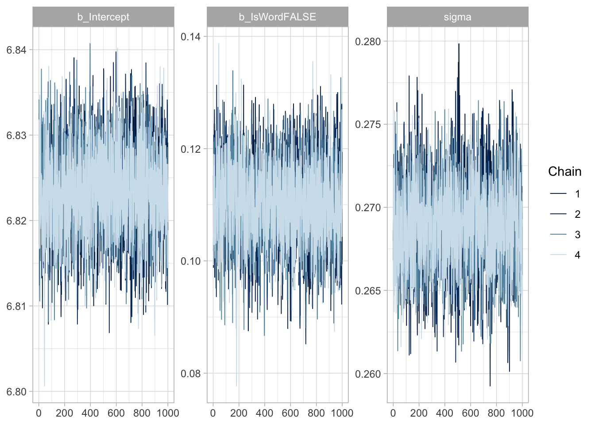
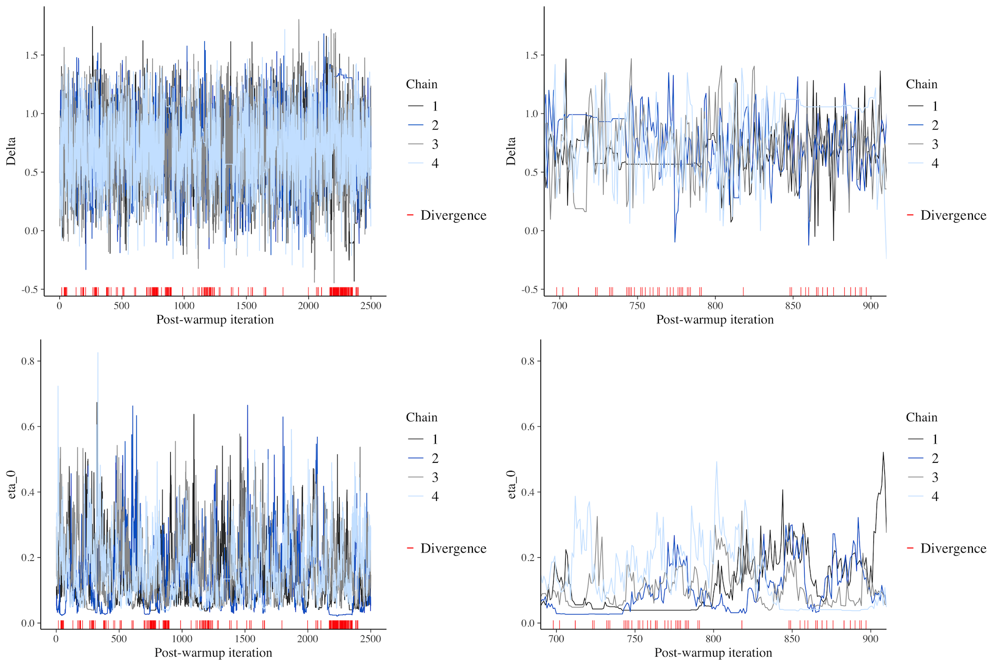

In Chapter 31, you found out about posterior predictive checks with pp_check(). The function returns a plot with the empirical distribution of the data and a number of predicted joint distributions based on the fitted model. Ideally, if the model correctly recovers the underlying generative process, the empirical and posterior distributions should overlap or at least be very similar. Posterior predictive checks are one simple way of doing model diagnostics. Model diagnostics is important, but in my opinion has been overly emphasised and it has become a substitute of good theoretical thinking (by theoretical I mean both linguistic and statistical). In this chapter I will introduce two other diagnostic checks you should look out for and I will present some solutions to fix common issues with model fitting.
32.1\(\hat{R}\) and Effective Sample Size
When you print a model summary, the regression coefficients table and the further distributional parameters (if present) have some extra columns we haven’t discussed yet. These columns are the Rhat, the Bulk_ESS and Tail_ESS columns. Let’s reload the log-normal model from Chapter 31 and print the model summary.
Family: lognormal
Links: mu = identity; sigma = identity
Formula: RT ~ IsWord
Data: mald_filt (Number of observations: 4999)
Draws: 4 chains, each with iter = 2000; warmup = 1000; thin = 1;
total post-warmup draws = 4000
Regression Coefficients:
Estimate Est.Error l-95% CI u-95% CI Rhat Bulk_ESS Tail_ESS
Intercept 6.82 0.01 6.81 6.83 1.00 4019 2995
IsWordFALSE 0.11 0.01 0.10 0.12 1.00 3585 2510
Further Distributional Parameters:
Estimate Est.Error l-95% CI u-95% CI Rhat Bulk_ESS Tail_ESS
sigma 0.27 0.00 0.26 0.27 1.00 3294 2989
Draws were sampled using sampling(NUTS). For each parameter, Bulk_ESS
and Tail_ESS are effective sample size measures, and Rhat is the potential
scale reduction factor on split chains (at convergence, Rhat = 1).
Let’s focus on Rhat: this is a measure of convergence, called \(\hat{R}\) (read “R hat”). When the MCMC algorithm shows good convergence at the end of all chains, \(\hat{R}\) is 1 or as close to 1 as possible. In this model, all \(\hat{R}\) values are exactly 1, indicating model convergence. Note that \(\hat{R}\) doesn’t have to be precisely 1, other slightly higher values of 1 are still acceptable. brms warns you if any \(\hat{R}\) value is too high, so if you don’t see warning messages when the model has finished fitting, you should not worry about it.
Moving onto Bulk_ESS and Tail_ESS, these are two measures of Effective Sample Size (ESS). Since the model fit is based on a series of MCMC draws, the sample size of the draws is the number of total MCMC iterations (4000 by default). However, these draws are not fully independent from each other, because they are derived from the same underlying MCMC process. This generally means that the “effective” sample size might be different, when accounting for the level of dependence between the draws. The MCMC algorithm is so efficient that in some cases the ESS is higher than the actual number of draws. brms reports two ESS measures: bulk ESS and tail ESS. The bulk ESS focuses on the central part (the bulk) of the posterior distribution of the parameter, while the tail ESS on the tails of the posterior distribution (usually the lower 5% and upper 95% quantiles). A sufficient bulk ESS means that the posterior mean/median are robust, because the MCMC algorithm has robustly explored the typical values of the parameter. When tail ESS is sufficient, this indicates that the model has efficiently explored rare or extreme values of the parameter. Ideally, both bulk and tail ESS should be hight enough. There isn’t a hard cut-off but it has been suggested that a value of 400 generally indicates efficient exploration of the parameter space. In any case, brms warns you if ESS is too low, so as with \(\hat{R}\), if you don’t see a warning about low ESS, you should not worry.
32.2 Chain mixing
Another simple way of assessing whether a model has efficiently explored the parameter space is to check the MCMC chains with a so-called trace plot. An MCMC trace plot is a type of line plot which plots the value of each draw in each MCMC chain (y-axis), ordered by iteration number (x-axis). You can see the trace plots of the parameters of the log-normal model in Figure 32.1. When the model has efficiently explored the parameter space of a parameter, the trace plot will look like a “hairy caterpillar”. This indicates that the chains have “mixed” well, in other words that they independently explored the same part of the parameter space.
mcmc_trace(rt_bm_2, regex_pars ="^b_|sigma")

Figure 32.1: Trace plot of model parameters.
Figure 32.2 shows what bad trace plots look like (sadly, when they are very bad they look like squashed caterpillars, like the trace plots to the right). The red ticks below the trace lines mark divergent transitions: these are transitions from one iteration to the next that are considered problematic. The more divergent transitions there are, the less reliable the MCMC exploration is. Ideally, there should be no divergent transitions, but a few (less than 1-5%) is fine if no other warning are produced. brms warns you about divergent transitions, but you should use your judgement in determining whether there are other underlying issues and usually the trace plot clearly indicates if there are issues.

Figure 32.2: Examples of bad MCMC trace plots.
32.3 Possible solutions
When brms gives you a warning about any of the diagnostics mentioned here, it also usually gives you possible solutions. Note that in certain cases, using these solutions does not solve the problem, if there are more fundamental issues with the model specification (like including a combination of predictors that can’t be estimated by the data, or when the sample size is very small and the model is very complex).
A common solution to convergence issues (i.e. problematic \(\hat{R}\), bulk/tail ESS or trace plots) is to increase the number of iterations. The default number is 2000 of which 1000 for warm-up, so you could set them to 3000 or 4000 with iter = 3000 in the brm() call. Note that increasing the number of iterations means that the model will take longer to fit.
Another solution is to increase one or more parameters related to the MCMC algorithm: one is the maximum tree-depth and the other is the adaptive delta. Both parameters control aspects of the physic equations used by the MCMC algorithm. The default values are max_treedepth = 10 and adapt_delta = 0.8. If brms suggests to increase either of these parameters you can do so with control = list(max_treedepth = 15, adapt_delta = 0.9) (note that adapt_delta must be smaller than 1). The higher these values, the longer the model takes but the better the exploration of the MCMC algorithm should be.
32.4 Summary
NoteDiagnostics
Posterior predictive checks with pp_check().
\(\hat{R}\) should be 1 if the model converged fine.
Bulk and tail Estimated Sample Size (ESS) should be high enough (> 400).
MCMC trace plots should look like “hairy caterpillars”, indicating the chains have “mixed” well.